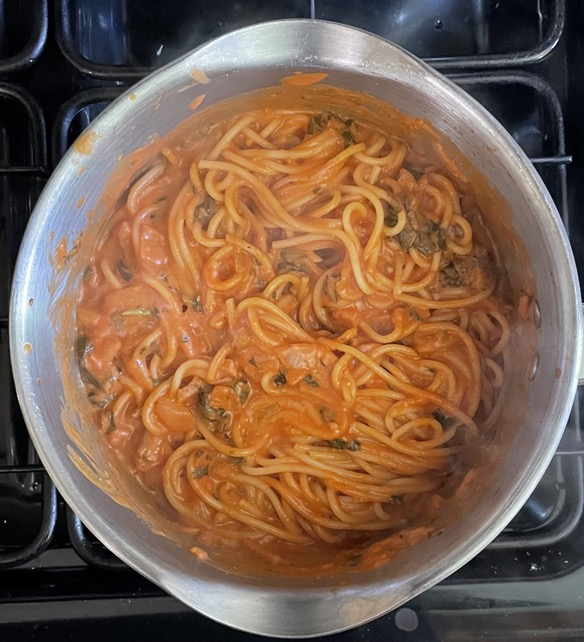

Tomato & mascarpone pasta sauce
Sauce - passata
- Fry till soft
- olive oil
- 1 onion chopped
- Add and cook for 1 min
- Add and simmer for 5 mins
- ½18.7cl bottle white wine
- Add and simmer for 10 mins
- 500g passata
- ½ tsp dried basil
- ¼ tsp salt
- ¼ tsp chilli flakes (optional)
- Add and simmer for 2 mins
- Add
Sauce - fresh tomatoes
- Fry till soft
- olive oil
- 1 onion chopped
- Add and cook for 1 min
- Add and simmer for 5 mins
- ½18.7cl bottle red / white wine
- Add, simmer and reduce for 30 mins
- 16 (1000g) medium tomatoes blitzed
- 80g black olives halved (optional)
- 1 tsp dried basil
- ¼ tsp salt
- ¼ tsp sugar
- ¼ tsp chilli flakes (optional)
- Add and simmer for 2 mins
Pasta
- Add sauce to pasta and mix
Serving
- Italian chicken
- 90g per person Spaghetti / Tagliatelle
- Sprouting broccoli / salad
- 4 portions
Notes
Pics
2023-05-27
- 30g fresh basil but dried probably better
